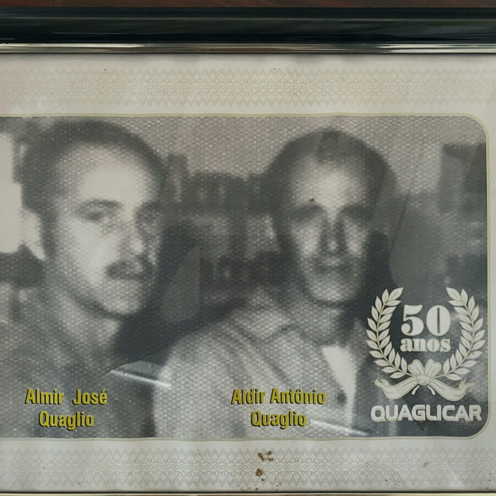
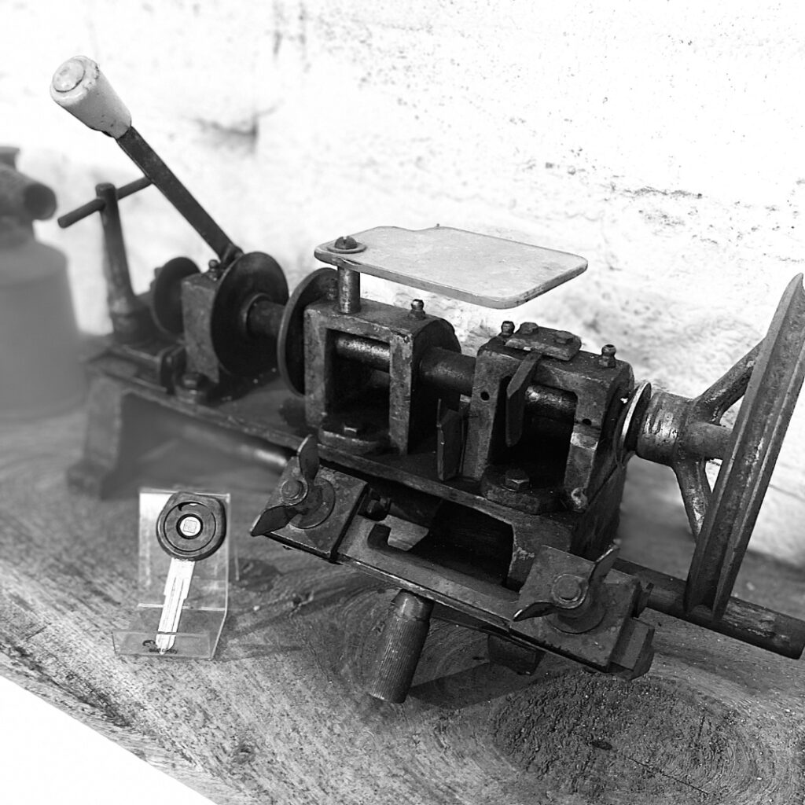
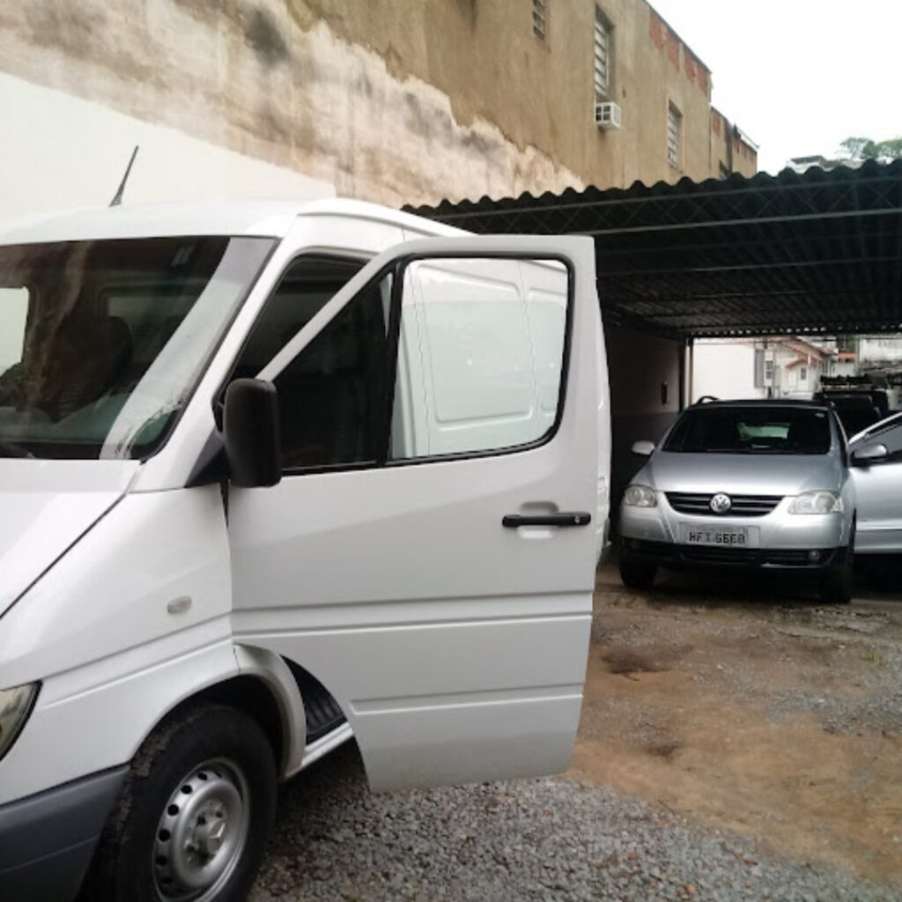
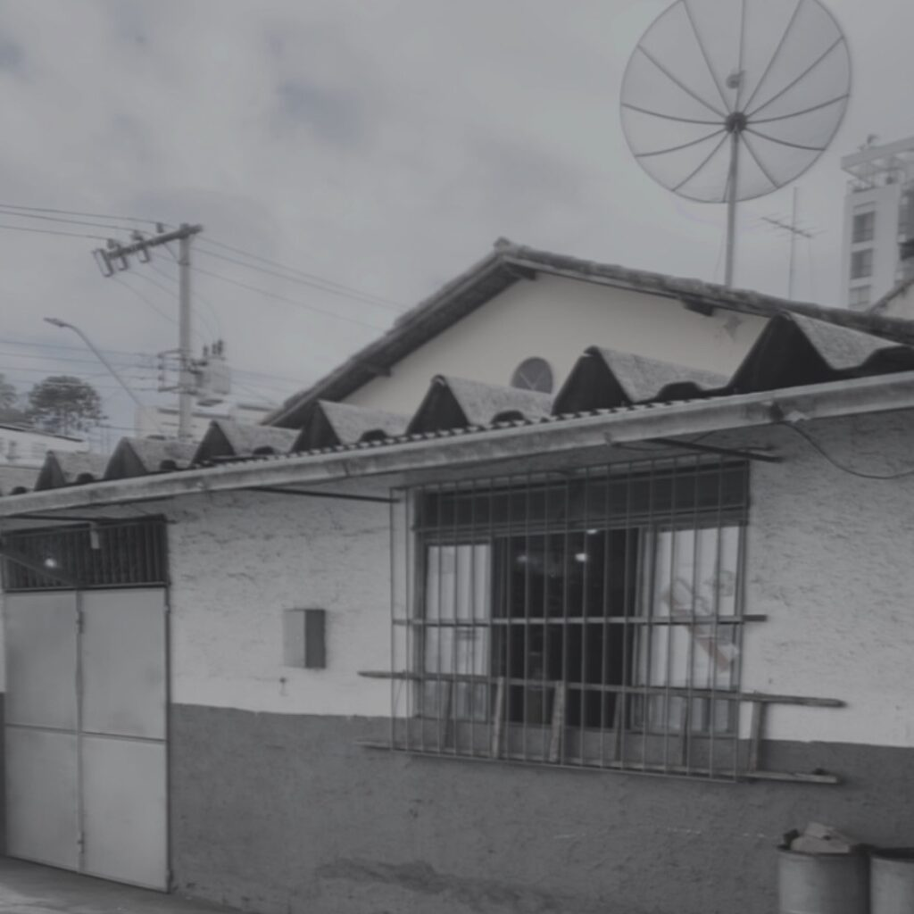
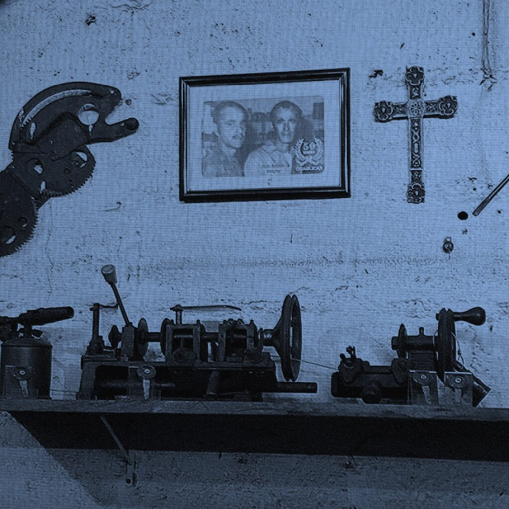
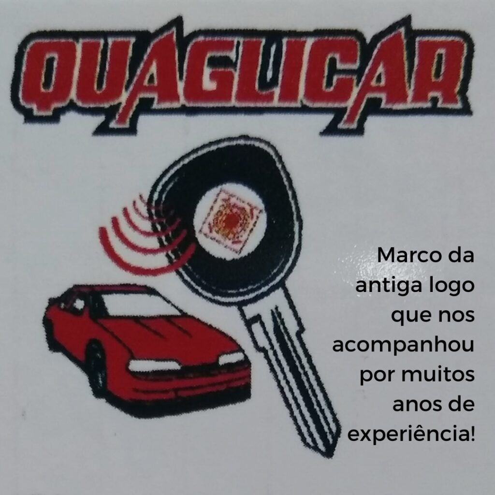

Fundada no mês de outubro de 1954, inicialmente com o nome de A CHAVE MODERNA, com endereço, na Av. Getulio Vargas,339 no centro da cidade de Juiz de Fora, por Almir José Quaglio. Em agosto de 1955, vem fazer parte da sociedade o irmão Aldir Antônio Quaglio.
Trabalhava-mos além da confecção de chaves residenciais e de automotivas no setor de reparação e manutenção de fechaduras e mecanismos de vidros de veículos e fechaduras residenciais.


Nossa 1ª mudança de endereço foi a partir do dia 15 de novembro de 1957, para rua Brás Bernardino, 239 ainda na região central, nossa 1ª loja própria, e ainda trabalhava mos atendendo os veículos na calçada em frente a loja. Permanecemos neste endereço durante aproximadamente 15 anos.
No ano de 1971 no mês de setembro, mudamos para rua Roberto de Barros, 186 onde adquirimos um imóvel (duas lojas) com uma área maior que nos permitiram além de setor de peças, setor de oficina, duas vagas internas para prestação de serviço. Neste novo endereço, já com a atual empresa QUAGLICAR LTDA, fundada poucos meses antes (16/06/71) nos especializávamos cada vez mais no setor automotivo. Permanecemos neste endereço cerca de 11 anos.


A cidade crescia, e o volume de veículos e trânsito na região central foram tornando impraticável esse tipo de serviço naquele endereço, pois apesar de termos estacionamento internamente dentro da loja não era suficiente, pois continuávamos também atendendo na calçada.
O fato citado acima nos levou uma nova mudança de endereço, no ano de 1982 no mês de novembro, desta vez para um bairro (Manoel Honório) de fácil acesso, localizado no início da principal avenida da cidade, onde já estivemos em dois endereços, no primeiro à rua Tenente Barroso, 20 tínhamos uma boa área com espaço para área da oficina e sete vagas para atendimento, onde permanecemos instalados por 04 anos e 04 meses.


Atualmente o nosso endereço é na avenida Barão do Rio Branco, 237, mudança acontecida em fevereiro de 1987. O local é próprio, uma área muito ampla com aproximadamente 450 metros quadrados, onde temos bastante espaço e ainda bastante a fazer para tornar mais confortável e prático nosso atendimento. Continuamos a fazer os serviços de Confecção Chaves Automotivas Tradicionais e Codificadas, Serviço de Troca de Bateria e Reparo de Chaves e Controle de Alarme, Reparação e Manutenção nos Sistemas de Vidros e Fechaduras procurando estar sempre sintonizados com os avanços dos novos sistemas e equipamentos dos veículos ligados à área da nossa prestação de serviços.
Estamos equipados com Copiadoras de Chaves Automáticas para maior precisão do frezamentos das chaves e Scanners adequados para programação de chaves e controles.
Estamos equipados com Copiadoras de Chaves Automáticas para maior precisão do frezamentos das chaves e Scanners adequados para programação de chaves e controles de alarme Temos um CHAVEIRO MÓVEL para atendimento do cliente no próprio endereço agilizando sempre mais o atendimento. A partir de fevereiro de 1988 até os dias atuais a empresa passou a ser dirigida pelos filhos de Almir e Aldir, Almir Quaglio Filho e Roberto José Quaglio